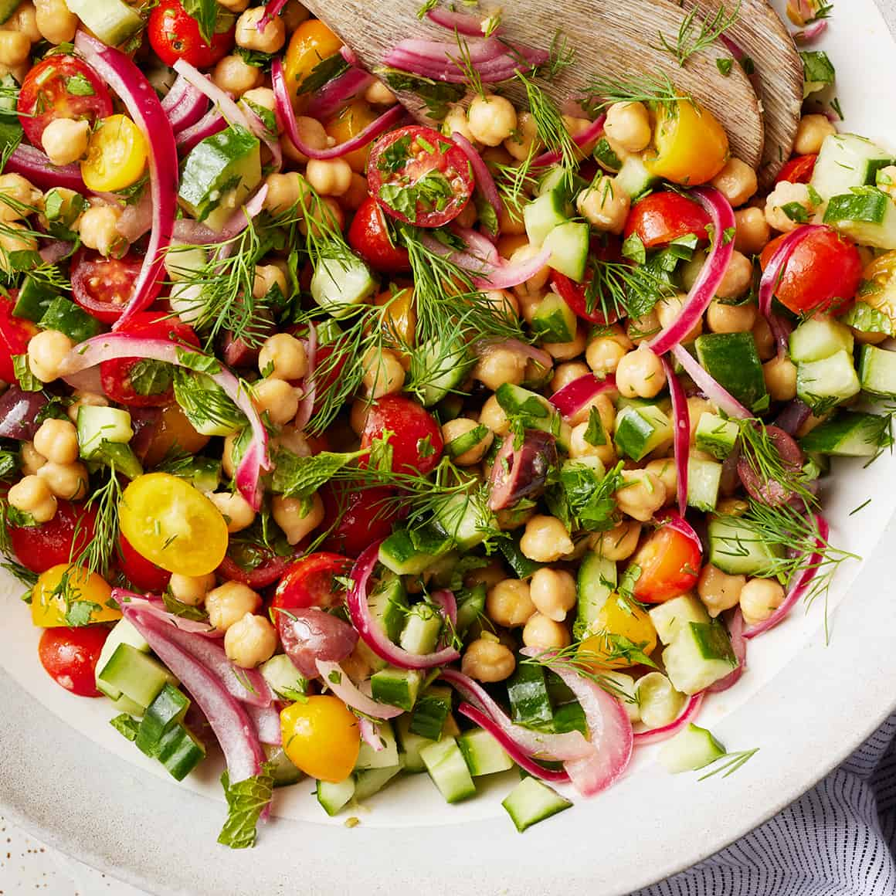

Salad Recipes
Salads can be healthy because they are high in fiber, vitamins, minerals, and water. The nutrients in salads can help with weight management, heart health, and skin health.
Click the item to see the detailed recipe
Mediterranean Chickpea Salad

Ingredients:
- 1 can (15 oz) chickpeas, drained and rinsed
- 1 cucumber, diced
- 1 cup cherry tomatoes, halved
- 1/4 red onion, finely sliced
- 1/4 cup crumbled feta cheese
- 2 tablespoons olive oil
- 1 tablespoon lemon juice
- Salt and pepper to taste
Recipe:
- In a large bowl, combine chickpeas, cucumber, tomatoes, red onion, and feta.
- Drizzle with olive oil and lemon juice.
- Toss gently, season with salt and pepper, and garnish with parsley or mint.
Quinoa and Kale Salad

Ingredients:
- 1 cup cooked quinoa (cooled)
- 2 cups kale, stems removed and chopped
- 1/2 cup shredded carrots
- 1/4 cup dried cranberries
- 2 tablespoons olive oil
- 1 tablespoon apple cider vinegar
- 1 teaspoon honey or maple syrup
- Salt and pepper to taste
Recipe:
- Massage the chopped kale with a pinch of salt until tender.
- Add the quinoa, carrots, cranberries, and nuts to the kale.
- Whisk together olive oil, vinegar, honey, salt, and pepper.
- Pour dressing over the salad, toss, and serve.
Avocado and Black Bean Salad
Ingredients:
- 1 can (15 oz) black beans, drained and rinsed
- 1 avocado, diced
- 1/2 cup corn (fresh, frozen, or canned)
- 2 tablespoons lime juice
- 2 tablespoons olive oil
- 1/4 teaspoon cumin
- Salt and pepper to taste
- Optional: Fresh cilantro for garnish
Recipe:
- In a large bowl, combine black beans, avocado, corn, and red bell pepper.
- Whisk together lime juice, olive oil, cumin, salt, and pepper.
- Drizzle the dressing over the salad and toss gently.
- Garnish with cilantro and serve fresh.